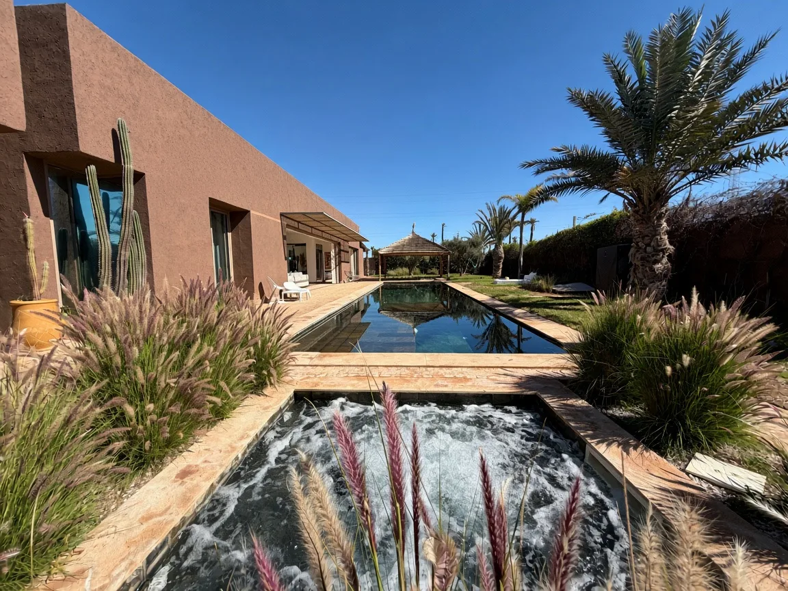
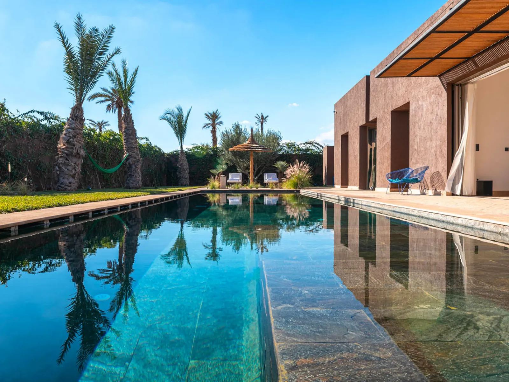
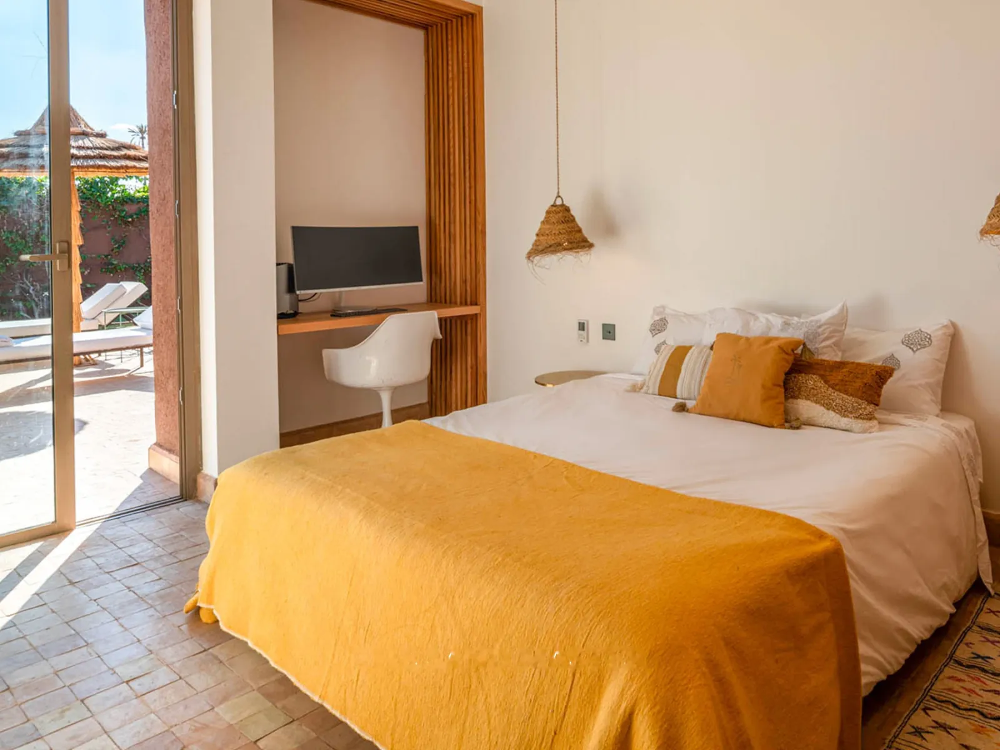
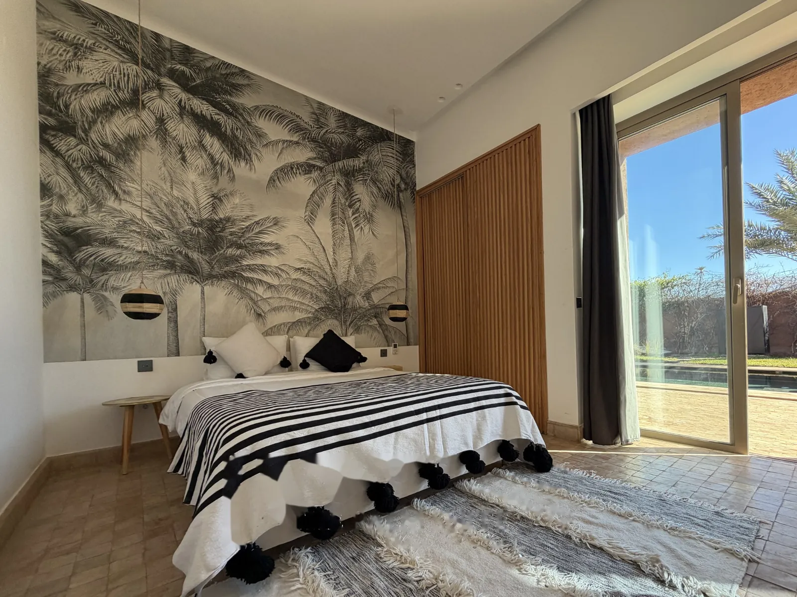
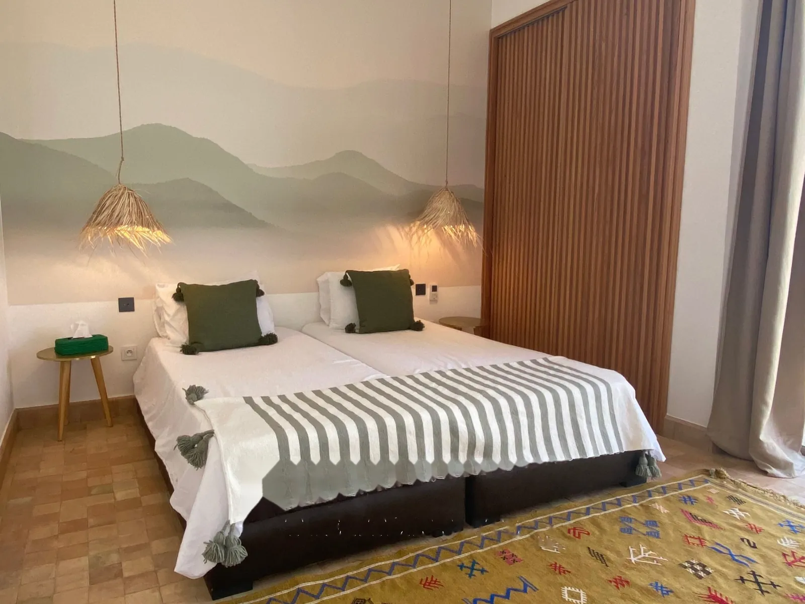
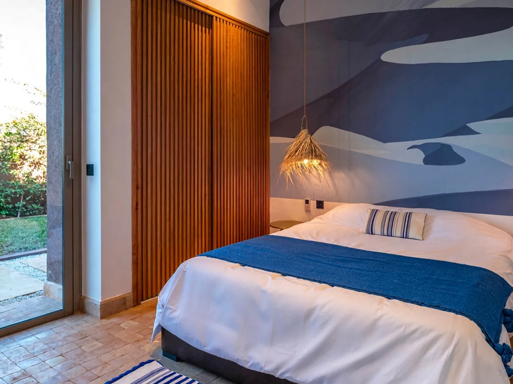
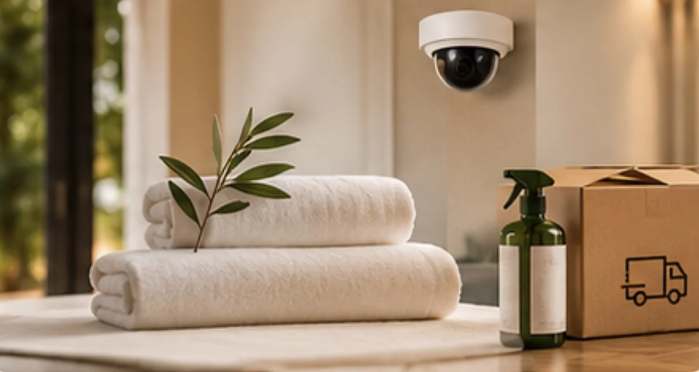
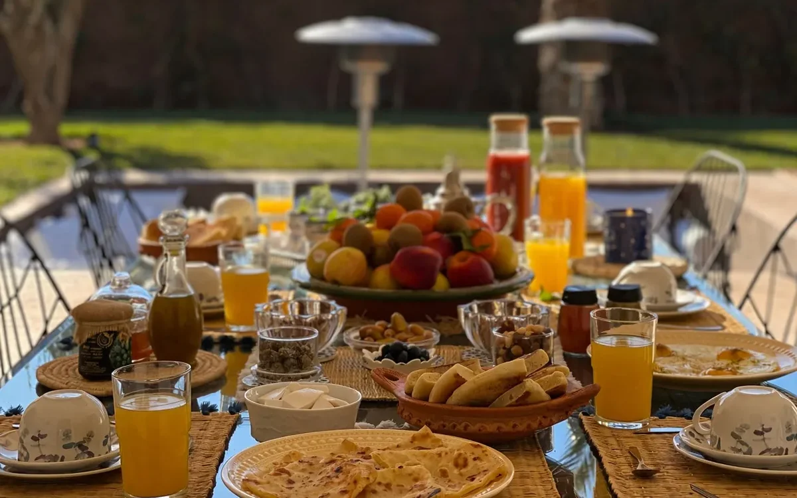
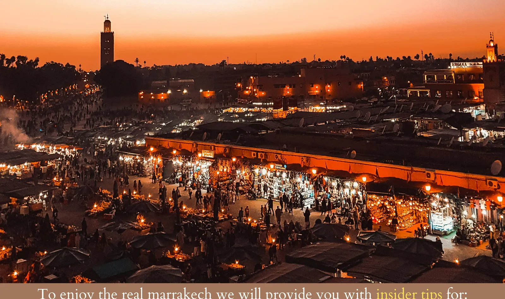

8 voyageursCapacité maximale

Villa Zen’O, villa à louer à la Palmeraie de Marrakech
La villa
Le calme de la Palmeraie, l’Atlas en toile de fond
Pour arriver à la Villa Zen'O, vous traversez la palmeraie de Marrakech. Dès l’entrée, un jardin de cactus s’ouvre sur une piscine à débordement, et derrière elle les montagnes de l’Atlas.
L’architecture marie des lignes contemporaines à la tradition marocaine : espace de vie décloisonné, hauteur sous plafond et baies vitrées pour une sensation « in & out ». Chaque chambre s’organise autour d’un olivier centenaire, avec salle de bain privative.
La maison est pensée pour les familles et les groupes d’amis. Elle est de plain-pied, avec lit bébé, chaise haute, des jeux, et un personnel discret.
Villa Zen’O est un clin d’œil à Dragon Ball Z : une statue de Sangoku veille dans le jardin.

Équipements
Le confort au quotidien
Les suites
Quatre suites, quatre atmosphères
Chaque chambre dispose de sa salle de bain privative et offre une vue apaisante sur la piscine ou sur les magnifiques oliviers du domaine

Sand Master

Palm Suite

Atlas Suite

Blue Desert Suite
La maison et ses attentions
À la Villa Zen’O
Une équipe attentive, une cuisine maison et nos conseils pour profiter pleinement de Marrakech.

Inclus dans le séjour
Le confort au quotidien
Personnel de maison présent de 9h à 17h, ménage quotidien, sécurité discrète 24h/24, entretien de la piscine et du jardin, linge de maison et serviettes de piscine.

Service à la carte
La cuisine de Mama Fouzia
Mama Fouzia prépare à la villa petits-déjeuners et repas selon vos envies. De la cuisine marocaine aux plats familiaux, tout est préparé sur place.

Nos recommandations
Nos bonnes adresses à Marrakech
Restaurants, sorties, visites et lieux à découvrir : nous partageons avec vous nos adresses préférées et quelques conseils pour profiter pleinement de Marrakech.
À votre rythme
Pour prolonger l’expérience
Transferts, découvertes et instants de bien-être : notre équipe se tient à votre disposition pour organiser ces moments pendant votre séjour.
Transferts & chauffeur privé
Transferts depuis et vers l’aéroport, déplacements dans Marrakech ou chauffeur privé à la journée. Nous organisons vos trajets selon vos besoins.
Excursions & activités
Explorez la Palmeraie autrement : sorties en quad, balades à dos de dromadaire ou à cheval. Nous organisons vos activités avant votre arrivée ou pendant votre séjour.
Massages & soins à la villa
Profitez d’un moment de détente sans quitter la villa. Massages et soins esthétiques peuvent être organisés directement sur place avec notre partenaire.


À proximité
Marrakech à portée de main
La villa se trouve dans la Palmeraie, entre le Palais Namaskar et le Palais Ronsard, près de l’Oberoi et du Palais Rhoul.
À découvrirJardin Majorelle : 13 minutes
Jemaa El-Fna : 15 minutes
M Avenue : 25 minutes
Jemaa El-Fna : 15 minutes
M Avenue : 25 minutes
SupermarchéÉpicerie : 3 min
Atacadao : 7 min
Atacadao : 7 min
Aéroport35 min
Temps de trajet indicatifs, susceptibles de varier selon les conditions de circulation.
Les avis de nos voyageurs
Sur Airbnb
4,95/541 avis voyageurs
Maxence
Mehdi a été un hôte formidable avec qui la communication a été très fluide. La Villa ressemble parfaitement aux photos, la piscine est fantastique. Le jacuzzi est un vrai plus. Bref Les enfants se sont régalés et nous aussi. Le Gardien sur place a été extrêmement discret. Nous l'avons rarement vu et il a pris soin de la piscine et des extérieurs. Côté emplacement, nous sommes à proximité de tout ce qui permet de profiter de la maison, mais aussi de pouvoir accéder rapidement au centre de Marrakech ainsi qu'aux activités autour. Nous les recommandons fortement. Au plaisir.
Avis Airbnb
Rashed
Traduit de l'anglais
Nous avons passé 4 nuits à Villa Zeno, avec nos 3 enfants.
La villa est telle qu’on la voit sur les photos : prestations haut de gamme et très spacieuse.
La femme de ménage s’est surpassée pour nous : les repas étaient d’un très bon niveau. Je recommande pour ma part d’aller au supermarché local, Atakadao, pour l’essentiel, car il n’y a pas grand-chose près de la villa.
Nous avons fait les quads et la balade à dromadaire organisés par le gardien : la prise en charge se fait depuis la villa.
Le chauffeur de taxi recommandé nous a aussi été très utile, mais il faut garder à l’esprit que la plupart des trajets vers le centre sont à 600 MAD l’aller-retour.
Mehdi est un hôte formidable : il répond toujours rapidement et a fait de nombreuses recommandations utiles.
Je recommande volontiers cette villa à mes amis et à ma famille.
Avis Airbnb
Asma
La maison de Mehdi a une ame, on ne se sent pas comme dans toutes les maisons en periphérie de marrakech dans les golfs ou autre qui se ressemblent toutes et dont les meubles et la deco sont du ikea . Mehdi est un hote toujours réactif, agréable et facilitateur. Calme et douceur de vivre, l'espace piscine est bien fait, aucun vis a vis. Un conseil, prenez bien l'itineraire conseillé par Mehdi pour arriver sinon vous allez vous perdre dans les pistes du douar derriere.
Avis Airbnb
Informations pratiques
À savoir avant votre séjour
À partir de 15h00.
Avant 11h00.
Réservation
Réserver en direct
Si vous souhaitez réserver en direct, merci de nous contacter.
Conditions et informations
Calendrier de paiement30 % du montant total est dû au moment de la réservation. Solde restant : à votre arrivée
Politique d’annulationTous les acomptes versés sont non remboursables.
CautionAucune caution n’est demandée.
FAQ
Questions fréquentes
Combien de voyageurs peut accueillir la villa ?
Villa Zen'O accueille jusqu'à 8 voyageurs, dans 4 suites et 5 lits, avec 4 salles de bain et 1 toilette séparée.
La piscine et le jacuzzi peuvent-ils être chauffés ?
Oui, les deux équipements peuvent être chauffés sur demande :
- Piscine : à partir de 60 € par jour.
- Jacuzzi : à partir de 35 € par jour.
Les tarifs varient selon la période de votre séjour. Merci de confirmer votre demande au moins 48 heures à l'avance afin que tout soit prêt à votre arrivée.
Quels services sont inclus dans le séjour ?
Le séjour comprend la présence du personnel de maison de 9h00 à 17h00, la sécurité 24h/24, le nettoyage de la piscine, l'entretien du jardin, le Wi-Fi fibre jusqu'à 200 Mb/s, le linge de maison, les serviettes de bain et de piscine, ainsi que les produits d'accueil (savon et shampoing). Les équipements de cuisine et de loisirs, dont le panneau de basket, sont également à votre disposition.
Votre séjour
Peut-on recevoir des personnes extérieures à la réservation ?
La villa est exclusivement réservée aux personnes mentionnées dans la réservation. Pour des raisons de sécurité et de tranquillité, aucun visiteur extérieur n'est autorisé.
La villa est-elle adaptée aux familles avec enfants ?
Oui. La villa est de plain-pied et dispose notamment d'un lit bébé, d'une chaise haute, de vaisselle adaptée et de jeux pour les enfants (PS5, baby-foot, ping-pong, panneau de basket, livres et jouets). La piscine et le jacuzzi nécessitent toutefois une surveillance permanente des parents.
Quels sont les horaires d'arrivée et de départ ?
L'arrivée se fait à partir de 15h00 et le départ avant 11h00. Toute demande d'aménagement de ces horaires dépend des disponibilités et doit être confirmée au préalable.
Services et restauration
Le ménage est-il effectué quotidiennement ?
Notre équipe de maison est présente à la villa de 9h00 à 17h00. Le ménage est organisé selon vos préférences et un entretien quotidien peut être assuré sur demande.
Comment fonctionne le service de repas avec Mama Fouzia ?
Mama Fouzia prépare vos repas directement à la villa, selon les horaires et tarifs suivants :
- Petit-déjeuner (9h–12h) : 10 € par personne.
- Déjeuner (12h–16h) : 15 € par personne.
- Dîner (19h–21h) : 20 € par personne.
Les repas sont à prévoir la veille. Vous pouvez également faire vos propres courses : Mama Fouzia se charge alors de préparer vos repas sans frais de prestation supplémentaires. Les courses restent à votre charge.
Quel est le menu de Mama Fouzia ? Peut-on choisir d'autres plats ?
La carte propose une sélection de spécialités marocaines et de plats familiaux. Le menu est entièrement adaptable : vous pouvez nous faire part de vos envies, de vos préférences alimentaires ou de demandes particulières avant et pendant votre séjour.
Se déplacer à Marrakech
Est-il nécessaire de louer une voiture ?
La location d'une voiture est recommandée pour profiter librement de Marrakech et de ses environs, mais elle n'est pas indispensable. Uber est disponible et nous pouvons également organiser vos déplacements avec des chauffeurs privés.
Combien coûte un trajet entre la villa et la médina ?
En Uber, comptez à partir de 100 MAD (10 €) pour rejoindre la médina. Un chauffeur privé peut également être mis à votre disposition à partir de 250 MAD (25 €) par trajet, selon le nombre de passagers.
Proposez-vous un transfert depuis l'aéroport ?
Oui, nous pouvons organiser votre transfert depuis ou vers l'aéroport de Marrakech. Le tarif commence à 350 MAD (35 €) par transfert. Il suffit de nous communiquer vos horaires de vol et le nombre de passagers à l'avance afin que nous organisions votre accueil.
Quelles activités peut-on organiser depuis la villa ?
Nous pouvons vous aider à organiser différentes activités : excursions en quad (350 MAD (35 €) pour une heure, avec 50 MAD (5 €) supplémentaires pour deux personnes sur le même quad), balades à dos de dromadaire (250 MAD (25 €) pour une heure, avec 50 MAD (5 €) supplémentaires à deux), sorties à cheval et massages à la villa. Les réservations doivent être confirmées à l'avance auprès de notre équipe.
Calendrier